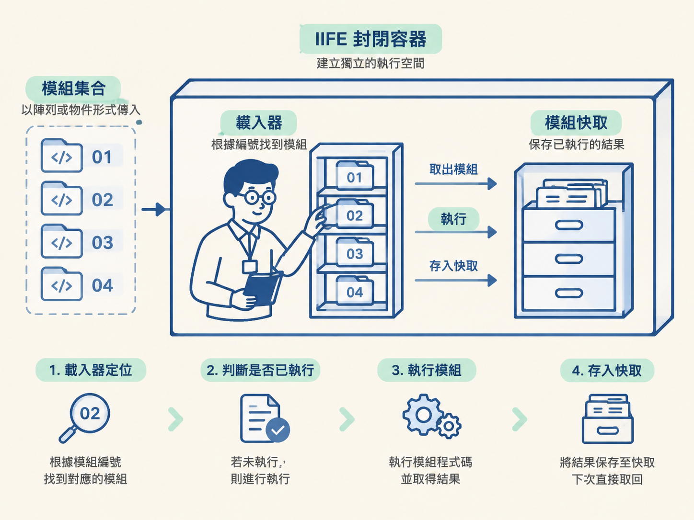
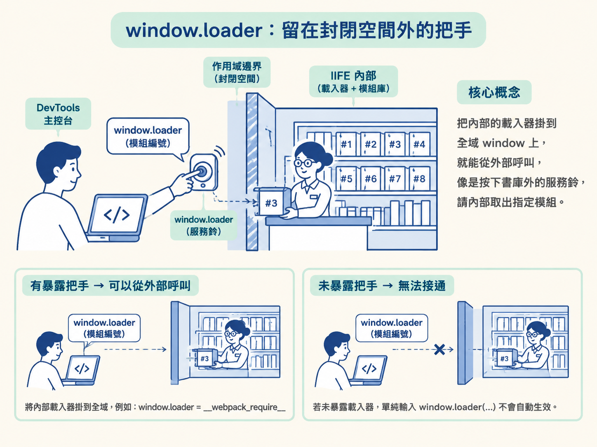

你在 DevTools 的 Sources 面板打開網站的 JavaScript，想搜尋「sign」或「token」，卻只看到一大團層層包裹、幾乎沒有名稱的程式碼。請求中的參數明明經過計算，但你就是找不到一個叫 getSign 的函式。
原因通常不是函式消失了，而是它已經被 webpack 這類工具打包。原本分散在不同檔案裡的模組，被收進一個或數個 bundle；模組的身分也可能從名稱變成編號。
可以把 bundle 想成一座編號書庫。加密邏輯仍是其中一本書，只是書名被換成了編號。與其從頭讀完整座書庫，更有效的方法是先找到負責取書的「圖書館員」。
這一節要建立的就是這張大圖：最外層的 IIFE 負責包住環境，require 函式依編號執行模組，快取保存執行結果，而 window.loader 則是範例刻意留給外部使用的把手。看懂這些關係，後面才能精準定位真正的加密模組。
webpack bundle 看起來很龐大，但這一課關心的最小骨架並不複雜。外層先建立一個封閉空間，裡面放著載入器與快取；所有模組則以陣列或物件的形式傳入。
當程式需要某個模組時，載入器會根據編號找到它。若模組尚未執行，就執行並保存結果；如果先前已經執行過，就直接從快取取回。
這個觀念適合用來處理「函式已被打包、只能看到模組編號」的情況。如果 Sources 裡已經能直接找到具名函式與清楚的呼叫關係，就不必先繞進載入器。載入器是定位入口，不是每次都必須使用的答案。

webpack 打包後的檔案，外型常是一個被括號包住的匿名函式，後面立刻接著括號執行，再把整組模組當成參數傳進去。這種結構稱為立即執行函式運算式，也就是 IIFE（Immediately Invoked Function Expression）。常見外型是 !function (形參) { … }(功能模組)。
IIFE 像是在 bundle 外面罩上一層透明保護殼。裡面宣告的變數留在自己的作用域，不會全部散落到全域，也比較不容易和其他程式互相衝突。
在 DevTools 裡看到這種結構時，先別急著閱讀每個內部函式。先看匿名函式最後吃進了什麼參數：如果是中括號，模組可能排在陣列裡；如果是大括號，則可能以物件的 key 保存。後面定位模組時，這個差異會直接影響你要找的是索引還是 key。
IIFE 裡真正值得先找的，是負責載入模組的 require 函式。它在壓縮後可能只叫 n，多檔版本也可能保留 __webpack_require__ 這類名稱。
它的工作很單純：接收一個模組編號，找到對應的模組函式，執行它，最後回傳模組輸出的結果。它就是那位只認編號、不認書名的圖書館員。
下面是物件版載入器的最小範例，內容逐字引自原始碼：
!function (e) {
var t = {};
function n(r) {
if (t[r])
return t[r].exports;
var o = t[r] = {
i: r,
l: !1,
exports: {}
};
e[r].call(o.exports, o, o.exports, n);
return o.exports.exports;
}
window.loader = n閱讀這段程式時，可以先抓住三個角色。外層參數 e 是模組集合，也就是書櫃；t 是模組快取；n(r) 則是載入器，其中 r 是模組的索引或 key。
載入器先檢查 if (t[r]) return t[r].exports;。如果快取裡已經有這個編號，就直接交回先前保存的內容，不再重新執行模組。
若快取裡沒有，程式便建立 var o = t[r] = { i: r, l: !1, exports: {} }。其中 i 保存模組編號，l 是載入狀態欄位，exports 則是模組交付結果的位置。
真正啟動模組的是 e[r].call(o.exports, o, o.exports, n)。它先從 e 找到編號為 r 的模組函式，並把 this 綁定成 o.exports；接著傳入模組紀錄 o、輸出物件 o.exports，以及載入器 n。因此，模組內部若還需要其他模組，也能繼續呼叫同一個載入器。
最後要特別注意 return o.exports.exports;。這份原始碼不是直接回傳整個 o.exports，而是再往裡取一層。原因是範例模組透過 this.exports = 值 保存結果，所以真正的輸出位於 o.exports.exports。
載入器知道怎麼取書之後，接著要看書櫃的排列方式。物件版是一張「模組編號對應模組函式」的表：
}(
{
"1001": function () {
console.log("foo");
this.exports = 100;
},
"1002":
function () {
console.log("bar");
this.exports = 200;
}
}
);
console.log(window.loader("1001"))這裡的模組編號是 "1001"、"1002" 這類字串，而不是原本的函式名稱。這也解釋了為什麼搜尋具名函式可能沒有結果：模組在 bundle 裡是靠編號辨認的。
呼叫方式則很直接。window.loader("1001") 把編號交給載入器，載入器找到對應函式並執行，最後取回它透過 this.exports 交出的值。
另一種常見外型是陣列版。所有模組依序放入陣列，模組編號自然就變成 0、1、2 這類索引：
!function (e) {
var t = {};
function n(r) { // r:索引或key
if (t[r])
return t[r].exports;
var o = t[r] = {
i: r,
l: !1,
exports: {}
};
e[r].call(o.exports, o, o.exports, n);
return o.exports.exports;
}
// 调用模块函数
console.log(n(0))
console.log(n(0))
console.log(n(1))
}([
function () {
console.log("foo");
this.exports = 100;
},
function () {
console.log("bar");
}
]);這段程式連續呼叫了兩次 n(0)。第一次呼叫時，載入器會執行索引 0 的模組，並把結果放進快取；第二次呼叫時，載入器發現快取已有紀錄，便直接回傳，不再重跑初始化邏輯。
因此，物件版與陣列版的核心機制其實相同。差別只在書架上的標籤：物件版用 key 找模組，陣列版用數字索引找模組。
快取不只是讓程式跑得更快，它也維持了模組執行的一致性。模組第一次被載入時建立輸出；之後不論被要求幾次，載入器都交回先前保存的結果。
可以把它想成圖書館員第一次接到需求時，先去倉庫取書並登記；之後再有人要同一本書，就直接查登記資料，不必重新跑一趟。
在逆向時，這個機制也提醒你：重複呼叫同一個模組編號，不代表模組內的初始化程式會跟著重跑。若你正在觀察某段初始化行為，就必須知道自己拿到的是第一次執行，還是快取中的既有結果。
window.loader：留在封閉空間外的把手如果 require 函式完全留在 IIFE 裡，外部程式就無法直接呼叫它。範例中的 window.loader = n，便是刻意把內部載入器掛到全域的 window 上。
這像是在封閉書庫外加裝一個服務鈴。你不必拆掉整面牆，只要在 DevTools 裡呼叫 window.loader(模組編號)，就能請內部載入器取出指定模組。多檔版也可以採用相同概念，只是內部函式可能叫 __webpack_require__，再以 window.loader = __webpack_require__ 暴露出來。
這個方法適合已經知道或能追到模組編號，而且載入器確實可以從外部接上的情況。反過來說，如果頁面沒有把載入器暴露到全域，單純輸入 window.loader(...) 並不會自動生效；這時應先辨認實際載入機制，而不是預設每個站都已經準備好同名介面。

webpack bundle 的骨架可以看成幾個彼此相扣的角色：IIFE 建立私密空間，模組集合保存編號與函式，require 載入器負責依編號執行模組，快取則保存第一次執行的結果。範例再透過 window.loader，把內部載入器接到外部。
webpack 把程式整理成「載入器 + 一櫃子編號模組」。逆向時不必先讀懂整包程式；先認出 require 函式與模組集合，再找到能從外部接上的把手，才有機會依編號抽出真正需要的加密模組。
這個觀念位在「看到打包檔」與「定位目標模組」之間。骨架辨認正確，後面的搜尋才不會像在書庫裡逐頁翻找。下一節會繼續比較陣列版、物件版與多檔版，看看不同書櫃外型下，模組編號與載入器分別藏在哪裡。